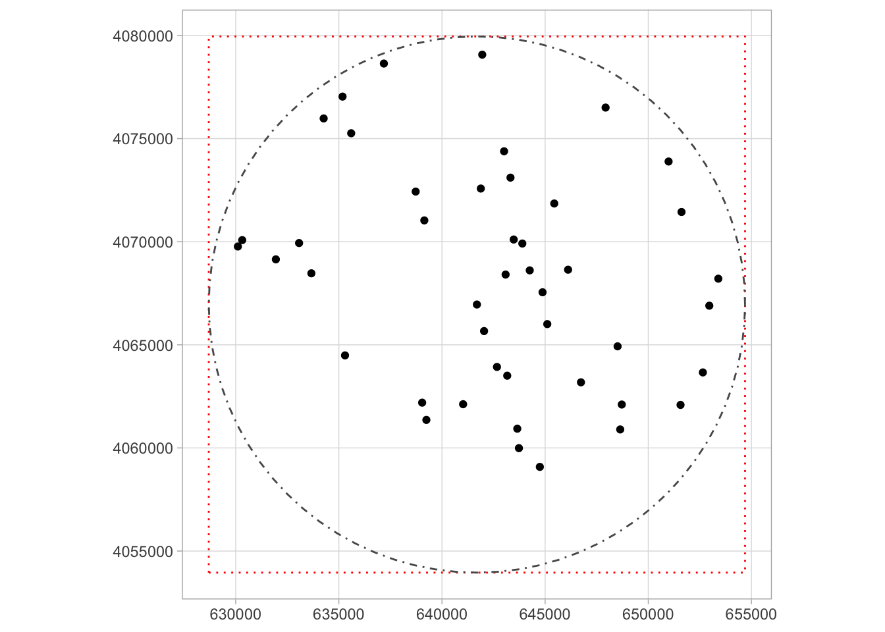
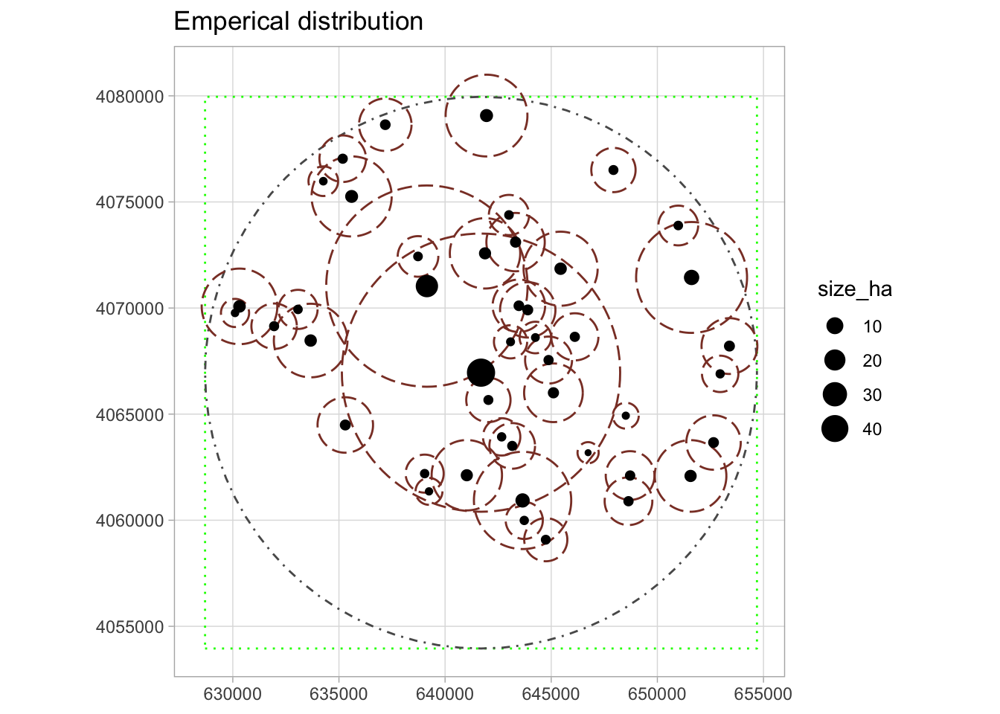
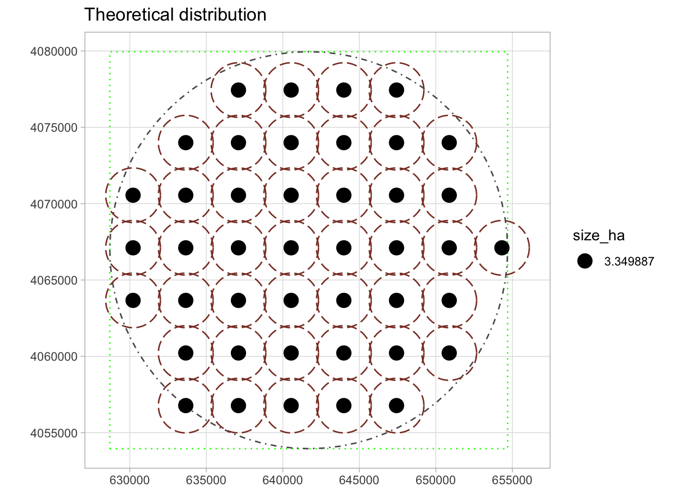
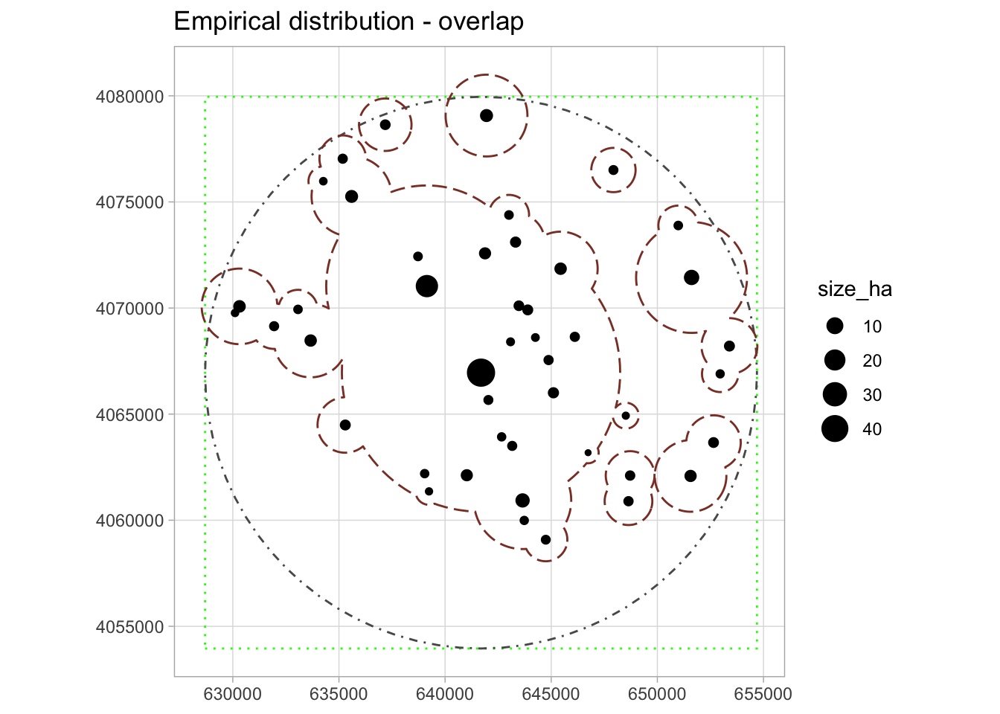

library(sf)
library(dplyr)
library(tidyr)
library(ggplot2)SPAG
Abstract
SPAG Index of Spatial Agglomeration notebook
Index
SPAG: Index of Spatial Agglomeration
\[ SPAG = I_\text{coverage} * I_\text{distance} * I_\text{overlap} \]
Survey Data
Load R packages
Load survey data
# check the layes name in the geopackage
# st_layers("./data/vect/data.gpkg")
# load all sites fron TBS survey
sites = st_read("../data/vect/data.gpkg", layer = "tbs_sites_point", quiet = TRUE)
# look at the data
head(sites, 1)Simple feature collection with 1 feature and 11 fields
Geometry type: POINT
Dimension: XY
Bounding box: xmin: 641692.6 ymin: 4066955 xmax: 641692.6 ymax: 4066955
Projected CRS: WGS 84 / UTM zone 37N
id size_ha start_date end_date longitude latitude
1 TBS_1_0_0 45 -900 -300 40.58699 36.73775
source code period name tell geom
1 Ur and Wilkinson 2008 TBS Iron Age Tell Beydar TRUE POINT (641692.6 4066955)# iron age sites
sites_IA = sites %>%
filter(period == "Iron Age") %>%
select(id, size_ha)
# load survey extent
survey = st_read("../data/vect/data.gpkg", layer = "tbs_survey_extent", quiet = TRUE)
# create a bounding box around sites
bbox = st_bbox(survey) %>% st_as_sfc()Map data
ggplot() +
geom_sf(data = bbox, fill = NA, linetype = 21, color = "red") +
geom_sf(data = survey, fill = NA, linetype = 22) +
geom_sf(data = sites_IA) +
coord_sf(datum = st_crs(sites)) +
theme_light()
Calculate Agricultural Sustaining Areas for emprical dataset
sites_emp = sites_IA %>%
mutate(
pop = round(100 * size_ha), # calculate population - 100 people per hectar
agr_zone_h = pop * 3, # calculate agricultural sustaining area = 3h per person
agr_zone_m = agr_zone_h * 10000, # hectares to meters
agr_radi_m = round(sqrt(agr_zone_m/pi))
)
head(sites_emp, 2)Simple feature collection with 2 features and 6 fields
Geometry type: POINT
Dimension: XY
Bounding box: xmin: 641692.6 ymin: 4064927 xmax: 648513.2 ymax: 4066955
Projected CRS: WGS 84 / UTM zone 37N
id size_ha geom pop agr_zone_h agr_zone_m
1 TBS_1_0_0 45.000000 POINT (641692.6 4066955) 4500 13500 1.35e+08
2 TBS_11_0_0 0.393999 POINT (648513.2 4064927) 39 117 1.17e+06
agr_radi_m
1 6555
2 610# create buffers for AgrSA
agr_sa_emp = st_buffer(sites_emp, dist = sites_emp$agr_radi_m)Plot AgrSA empirical
ggplot() +
geom_sf(data = bbox, fill = NA, linetype = 21, color = "green") +
geom_sf(data = survey, fill = NA, linetype = 22) +
geom_sf(data = agr_sa_emp, fill = NA, linetype = 23, color = "coral4") +
geom_sf(data = sites_IA, aes(size = size_ha)) +
labs(
title = "Emperical distribution"
) +
coord_sf(datum = st_crs(sites)) +
theme_light()
Calculate Agricultural Sustaining Areas for theoretical dataset
# create a "regular" distribution of theoretical sites
# number of empirical sites
n = nrow(sites_emp)
# total area
region.area = sum(sites_emp$agr_zone_m)
#compute regular distribution
sites_theor = st_sample(survey,n, type = "regular", exact = TRUE, offset = c(0,0)) %>%
st_as_sf()
# number of theoretical sites
k1 = nrow(sites_theor)
# compute area and radii for theoretical Agr SA
sites_theor = sites_theor %>%
mutate(
size_ha = sum(sites_emp$size_ha) / k1,
agr_zone_m = region.area / k1,
agr_radi_m = sqrt(region.area/(k1*pi))
)
# create buffers for AgrSA
agr_sa_theor = st_buffer(sites_theor, dist = sites_theor$agr_radi_m)Plot AgrSA theoretical
ggplot() +
geom_sf(data = bbox, fill = NA, linetype = 21, color = "green") +
geom_sf(data = survey, fill = NA, linetype = 22) +
geom_sf(data = agr_sa_theor, fill = NA, linetype = 23, color = "coral4") +
geom_sf(data = sites_theor, aes(size = size_ha)) +
labs(
title = "Theoretical distribution"
) +
coord_sf(datum = st_crs(sites)) +
theme_light()
Coverage
\[ I_\text{coverage} = {\Sigma P_i \over P_r} \]
numerator.coverage = sum(sites_emp$agr_zone_m)
denominator.coverage = region.area
i.coverage = numerator.coverage / denominator.coverage
paste0("Index coverage is equal to: ", i.coverage)[1] "Index coverage is equal to: 1"always 1 when analyzing all sites within region / survey from one period
Distance
\[ I_\text{distance} = {\Sigma_i \Sigma_j d_{ij}/ k \over \Sigma_i \Sigma_j \hat d_{ij} / k } \]
# empirical distance
numerator.distance = mean(st_distance(sites_emp))
# theoretical distance
denominator.distance= mean(st_distance(sites_theor))
i.distance = numerator.distance / denominator.distance
paste0("Index distance is equal to: ",i.distance)[1] "Index distance is equal to: 0.87833602209736"Overlap
\[ I_{overlap} = {P(\cup P_i) \over \Sigma P_i} \]
Compute union of overlapping agr areas
# create union of Agr SA
agr_sa_emp_union = st_union(agr_sa_emp)
# calculate the area of the overlapping areas
union_area = st_area(agr_sa_emp_union) # in m^2Map
ggplot() +
geom_sf(data = bbox, fill = NA, linetype = 21, color = "green") +
geom_sf(data = survey, fill = NA, linetype = 22) +
geom_sf(data = agr_sa_emp_union, fill = NA, linetype = 23, color = "coral4") +
geom_sf(data = sites_emp, aes(size = size_ha)) +
labs(
title = "Empirical distribution - overlap"
) +
coord_sf(datum = st_crs(sites)) +
theme_light()
numerator.overlap = union_area
denominator.overlap = sum(sites_emp$agr_zone_m)
i.overlap = numerator.overlap / denominator.overlap
paste0("Index overlap is equal to: ",i.overlap)[1] "Index overlap is equal to: 0.65025110873164"SPAG
i.spag = i.coverage * i.distance * i.overlap
paste0("SPAG indes is equal to: ",i.spag)[1] "SPAG indes is equal to: 0.571138972207746"Scalar value between 0 (agglomeration) and 1 (regular distribution).